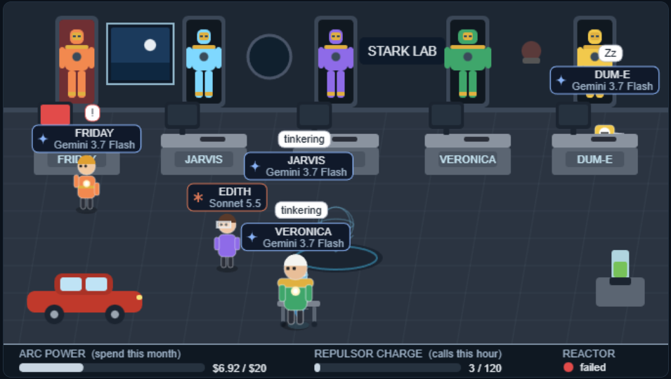
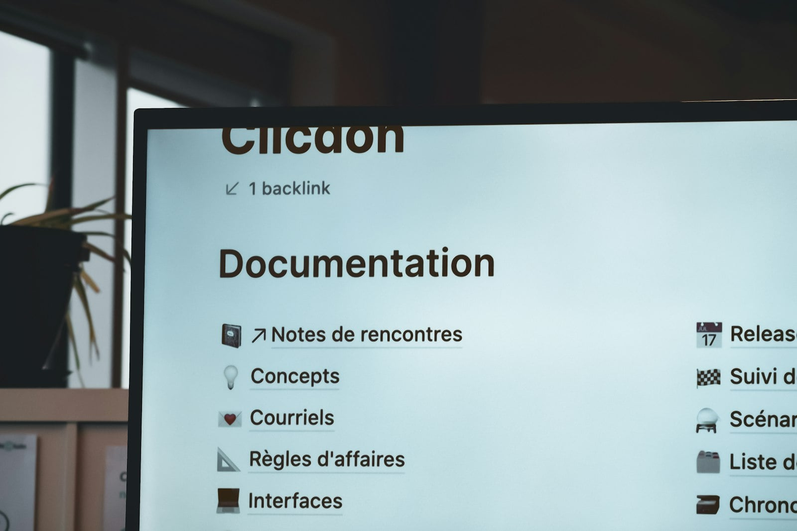
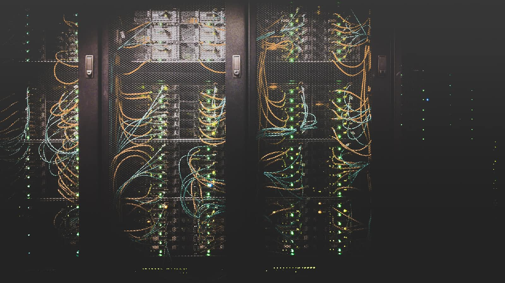
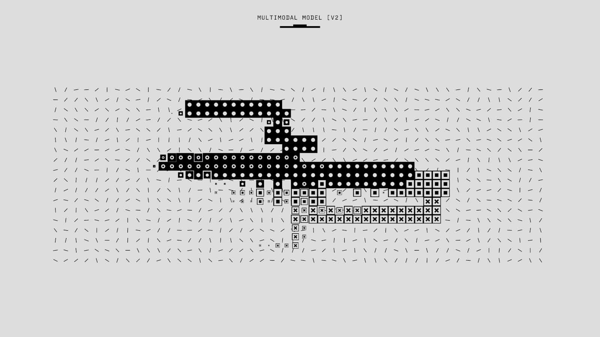
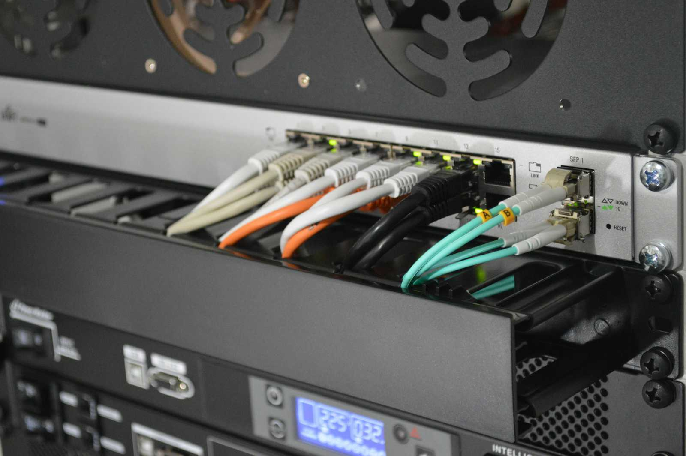

Notes from a homelab dungeon, and the AI agents that run it
An enterprise integration architect writes about homelabs, self-hosting and AI agents. The wins, the failures, and the 3 AM fixes.
What AI Got Wrong (And Why That's the Point)
AI got things wrong on this build more than once. Most of it was a documentation problem, and the rest is why I stay in the loop.

The Layers: How the Pieces Actually Talk to Each Other
One front door, one identity decision, simple services and an observer that touches nothing. The shape is what transfers, not the tools.
Running More Than One AI Without Losing Control
I split the work between Claude and Gemini, then used branches and reviews to keep two AI contributors from colliding.
The Delegation Playbook
One question decides what AI gets to do on my homelab: can this be undone? Everything else follows from it.

I Built a Little Workshop to Watch My AI Agents Work
A free, vibe-coded Stark workshop that shows my AI agents handing off work live. No LLM tokens, read-only, and easy to build yourself.

A Crew of AI Agents Runs My Homelab
Five AI agents handle the day-to-day running of my servers while I make the decisions. How they fit together, which models do which job, and what went wrong.

The Document System That Keeps AI Grounded
One notes file fell apart, so I split the project into numbered topic folders and gave every AI session a file to read first. Click through the layout.
The Conversation Before the Build: Aligning with AI on Architecture
Before any config existed I spent my first hours talking architecture with Claude, then wrote it down. Here is the loop and where I keep the leash short.
Experimenting With Autonomous AI Agents: OpenClaw and Moltbook
I let an OpenClaw agent loose on Moltbook, a social network for AI agents, and locked it in an LXC on its own VLAN first.
Building a Resilient Homelab Storage Solution with TrueNAS
TrueNAS SCALE virtualized on Proxmox at two sites, with local and off-site backups, because redundancy is not a backup.
Supercharge Your Terminal with OpenCode CLI
OpenCode is an open-source terminal AI agent that works with cloud models, Groq or local Ollama, so you aren't locked to one vendor.
Build Your Own Netflix
A self-hosted request-to-playback pipeline with Ombi, the *Arr apps, qBittorrent, TrueNAS and Jellyfin, so you own your library instead of renting it.

Building a Homelab
Why I run a homelab, the three building blocks it rests on, and how to start with old hardware.

My Personal AI Stack in a Homelab
The local AI stack I run in my homelab: what each piece does, what plugs into it, and the modest GPU behind it.
Building Your Own Personal Photo Cloud
How I replaced paid photo storage with Immich and Nextcloud on two TrueNAS servers that back each other up every night.
A Site-to-Site WireGuard Tunnel for TrueNAS Replication
How I joined my home and a friend's house with WireGuard on pfSense so TrueNAS can replicate over SSH without exposing either server.

Building a Homelab: Technical Expertise at Home
The goals behind my homelab, the virtualization, VLAN and NAS pieces that make it up, and a five-step way to start your own.